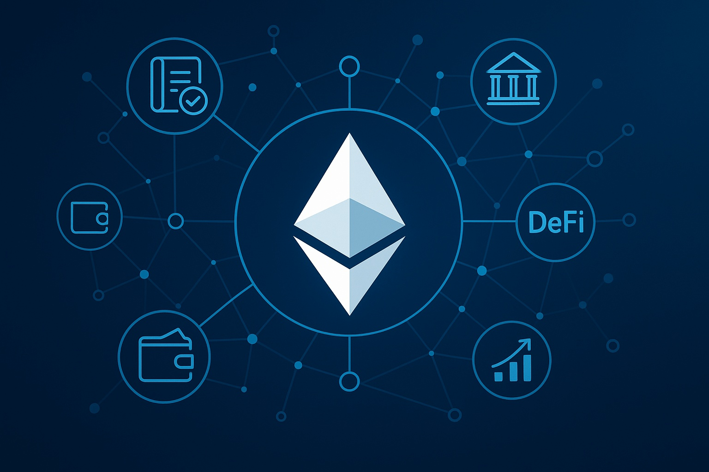
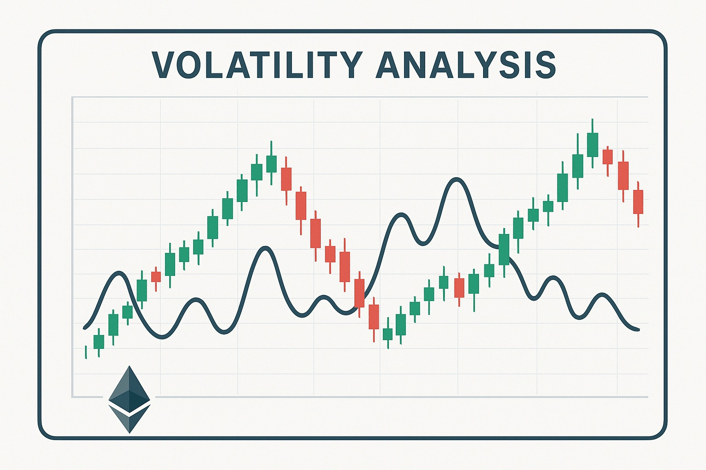

Ethereum Price Forecast for End of 2025: Comprehensive Analysis and Perspectives
The details in this article are intended for educational purposes only and should not be considered financial advice. Investing in cryptocurrencies carries significant risk.
Introduction
As of August 20, 2025, 01:00 AM EEST, Ethereum (ETH) is priced near $3,450, holding its place as the top smart contract blockchain in the crypto world. Created by Vitalik Buterin and launched in 2015, Ethereum underpins decentralized apps (dApps), decentralized finance (DeFi), and non-fungible tokens (NFTs), serving as a foundation of Web3. With Ethereum 2.0 upgrades and continuous scaling improvements, ETH maintains a leading role in blockchain innovation. This article presents a thorough outlook for Ethereum’s potential by the end of 2025, highlighting optimistic and cautious scenarios, main growth catalysts, and risk considerations shaped by market and ecosystem dynamics.
Current Situation
On August 20, 2025, Ethereum is valued at approximately $3,450, a 20% rise compared to June 2025, when ETH traded at $2,875. Over the last 30 days, ETH has shown resilience, recording 55% positive days and a volatility rate of 4.8%. The Fear and Greed Index at 68 reflects strong market optimism, fueled by DeFi expansion, NFT activity, and Ethereum’s integration with layer-2 networks. In the past year, ETH climbed from $2,100 to $3,450, achieving a 64% increase. Since 2020, when ETH was at $400, it has grown 762%, driven by its advanced smart contract framework and broad ecosystem adoption.
Price Predictions for End of 2025
Experts provide a range of Ethereum forecasts for December 2025 depending on market developments. Bearish outlooks see ETH potentially retreating to $2,500 if a 30–50% correction hits in early 2025. Neutral projections expect ETH to consolidate between $4,000 and $5,000, supported by steady DeFi and layer-2 usage. Optimistic analysts predict ETH could soar to $6,000–$7,500, especially if recovery momentum builds between February and April 2025. Some also anticipate ETH reaching $5,500 by October 2025 should Web3 adoption and institutional inflows expand further.
Factors Driving Price Growth
- DeFi and NFT Expansion: Ethereum’s dominance in decentralized finance and non-fungible tokens fuels sustained demand for ETH.
- Layer-2 Scaling: Rollup solutions such as Optimism and Arbitrum improve Ethereum’s throughput, cutting fees and attracting more users.
- Institutional Demand: Rising engagement from large investors and Ethereum-based ETFs boosts credibility and capital inflow.
- Market Recovery: A projected crypto uptrend in early 2025 could serve as a catalyst for ETH’s price escalation.
- Protocol Enhancements: Continued development, including sharding and improved energy efficiency post-merge, reinforces Ethereum’s value proposition.
Risks and Downward Factors
- High Volatility: A 30–50% market pullback expected in early 2025 could weigh heavily on ETH and investor confidence.
- Regulatory Pressure: Tighter global rules targeting cryptocurrencies and DeFi may restrict Ethereum’s growth potential.
- Rival Blockchains: Alternatives like Solana, Cardano, and Polkadot could eat into Ethereum’s market share if adoption accelerates.
Volatility Analysis
Between July and August 2025, ETH advanced from $2,875 to $3,450, achieving a 20% gain with a 4.8% volatility rate, showing greater stability than in prior cycles. Its yearly growth of 64% further reflects strong momentum. Technical signals, including bullish trends on the 50-day and 200-day EMAs, point to continued upside. A possible rebound from February to April 2025 may strengthen ETH’s valuation, especially with rising activity across DeFi, NFTs, and Web3. Ethereum’s mature ecosystem and constant upgrades place it in a favorable long-term trajectory.
Conclusion
By late 2025, Ethereum is projected to trade between $4,000 and $6,000, with the potential to hit $7,500 under favorable bullish conditions driven by DeFi growth, scaling progress, and institutional involvement. Nonetheless, investors should stay alert to volatility, evolving regulations, and increasing competition. Careful research and proper risk strategies remain essential when considering Ethereum investments.